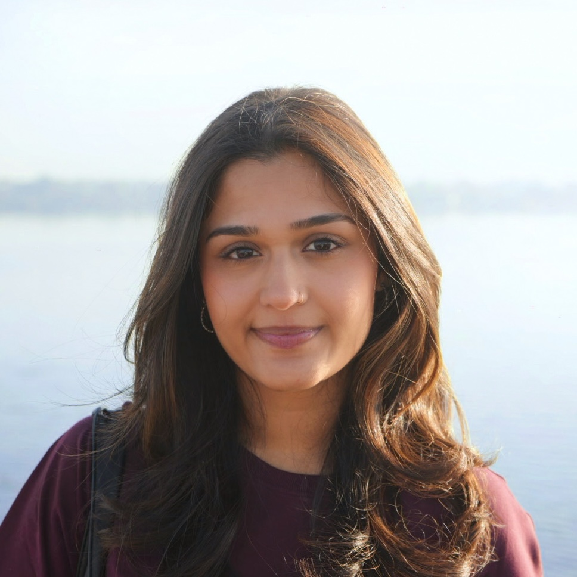

Smriti Vaidyanathan
I'm an incoming Computational Biology PhD student at UC Berkeley (Fall 2026).
I completed my Master's in Computer Science at Columbia University, where I conducted research at the New York Genome Center in the Knowles Lab, developing deep learning models for integrative analysis of gene expression and alternative splicing in single-cell transcriptomic data.
Before that, I earned my Sc.B. in Computational Biology from Brown University, where I studied alternative splicing regulation by RNA-binding protein condensates using computational analysis of bioimages in the Larschan Lab.
smritivaidyanathan [at] berkeley [dot] edu
Projects
SpliceVI
Research project within the Knowles Lab. A multimodal VAE integrating gene expression and splicing signals from scRNA-seq data (see preprint), built using scvi-tools, inspired by and adapted from MultiVI. Also includes a single-modality splicing VAE with a partial encoder and linear decoder.
iSTAR-C
Final project for Columbia's BMCS E4480. Extended iSTAR (Zhang et al., 2024) with biologically informed supervision for pixel-level cell-type prediction, using Starfysh-derived spot-level compositions and optional heat-diffusion pseudo-labels for out-of-spot supervision.
Remembering to Learn: A Brain-Inspired Approach to Catastrophic Forgetting in AI
Final project for Columbia's COMS E6998. Extended FlyModel with BI-R, EWC, and cascade synapses to improve continual learning on CIFAR-100. Cascade synapses notably reduced memory loss without replay.
Brain Tumor Segmentation and Survival Prediction (BRATS 2020)
Final project for Columbia's COMS W4995: Deep Learning for Computer Vision. Segmented tumor regions and predicted survival outcomes from BRATS 2020 MRI scans using U-Net and ResNet-based models.
3D Speckle Volume Quantifier
Custom analysis tool developed for my undergraduate honors thesis at Brown University in the Larschan Lab. Quantifies nuclear speckle volumes from confocal z-stacks to study how the GA-binding transcription factor CLAMP influences splicing condensate formation in Drosophila embryos.
Mama's Pastaria (VR Game)
Final project for Columbia's COMS W4172: 3D User Interfaces and Augmented Reality. A Unity-based VR cooking simulator where players prepare pasta dishes for customers using interactive mechanics inspired by Papa's Pizzeria and Cooking Mama.
Desktop World
Final project for Brown's CSCI 1230: Computer Graphics. A procedurally generated snow globe–like world featuring terrain, particle systems, boids, custom shaders, and selective bloom effects. Live demo ↗
WordleTerminal
A terminal-based clone of NYT Wordle, built for fun in Python.